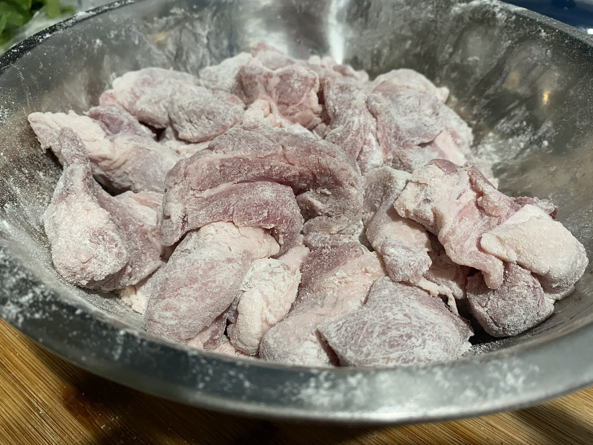
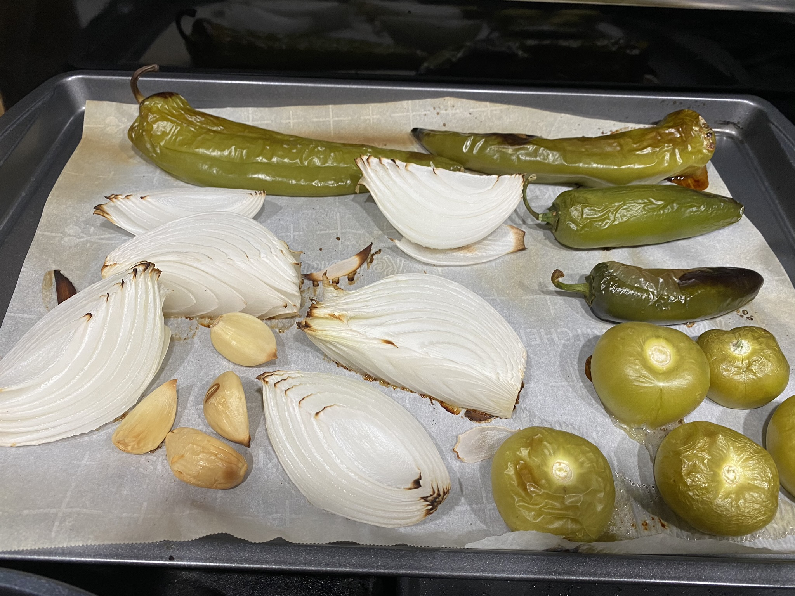

3 lbs pork shoulder, cut into small chunks
4 garlic cloves
1 large white onion, cut into eighths
3 Anaheim peppers
2 jalapenos
1 poblano pepper
5 tomatillos
1/2 tsp cumin
1/2 tsp oregano
1/2 tsp cayenne pepper
2 tbsp all purpose flour
1 bunch cilantro, stems removed
1/2 tsp salt
1/2 tsp pepper
1/2 tsp ground cummin
Serves Six Total Time: 6 hours
Preheat the oven to 450 degrees Fahrenheit. On a baking sheet place the peppers, tomatillos, onion and garlic. Roast for about 30 minutes or until the outsides are slightly charred.

Mix together the pork and flour. In a large pan over medium heat, brown the pork on all sides in batches for about a minute per side. Then set aside.

Put the grilled vegetables in a blender along with the cilantro and blend until it has a salsa consistency. Add the meat and salsa to a slow cooker along with the rest of the spices. Slow cook for about 6 hours or until the pork falls apart with a fork.
Serve hot with rice or tortillas.